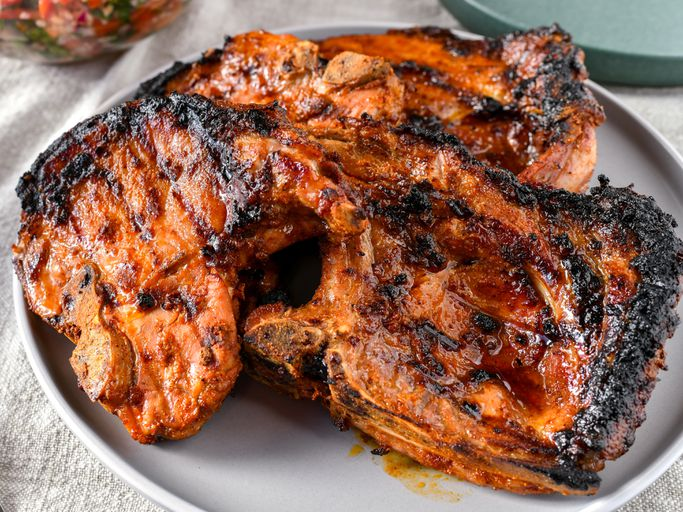
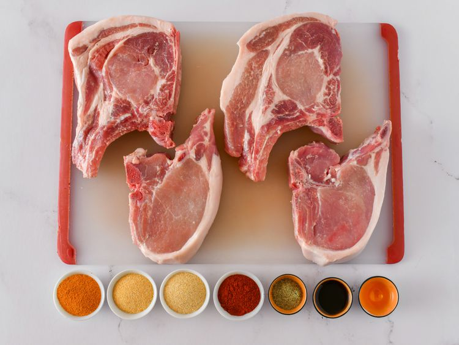
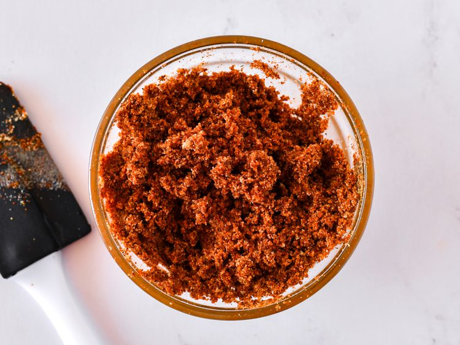
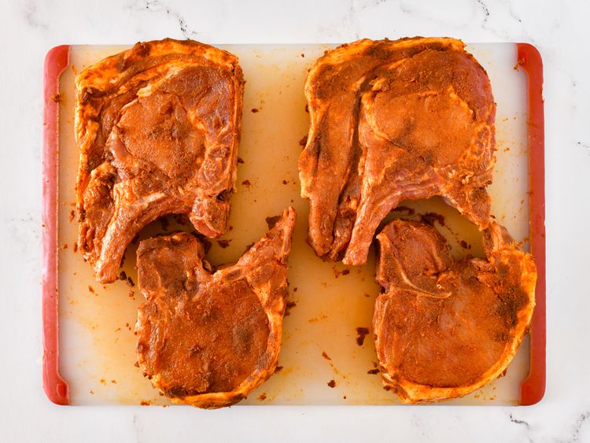
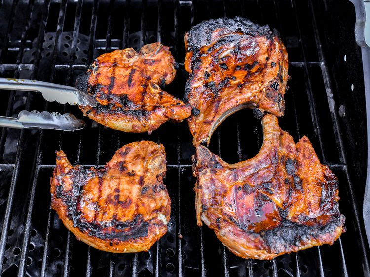
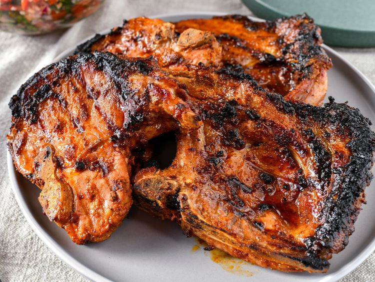

These tasty grilled pork chops are flavored with an easy homemade seasoning rub for a spicy, smoky flavor. They're quick to prep and always a favorite at BBQ parties.
Gather all ingredients. Preheat an outdoor grill for inhdirect cooking over medium heat and lightly oil the grate.

To make the wet spice rub: Mix seasoned salt, garlic powder, onion powder, paprika, Worcestershire sauce, pepper, and liquid smoke together in a small bowl until thoroughly combined.

Massage spice rub on both sides of pork chops; let stand for 10 minutes.

Cook chops on the preheated grill over indirect heat until no longer pink inside, about 12 minutes per side. An instant-read thermometer should read at least 145 degrees F (63 degrees C).

Let stand for 10 minutes before serving.
